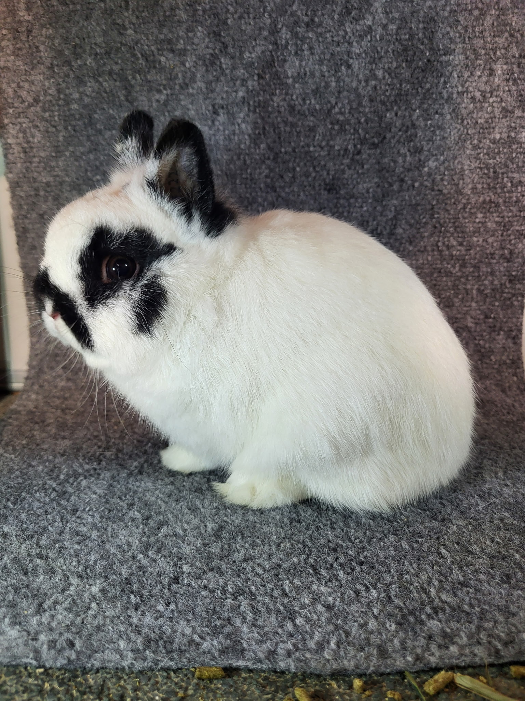
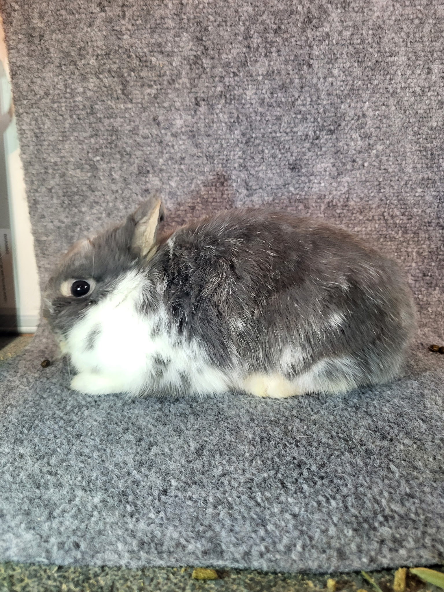
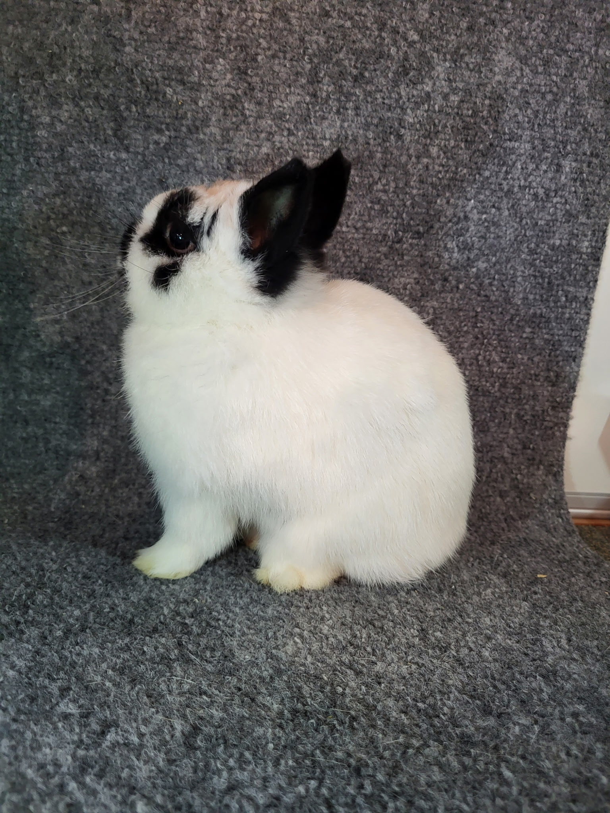
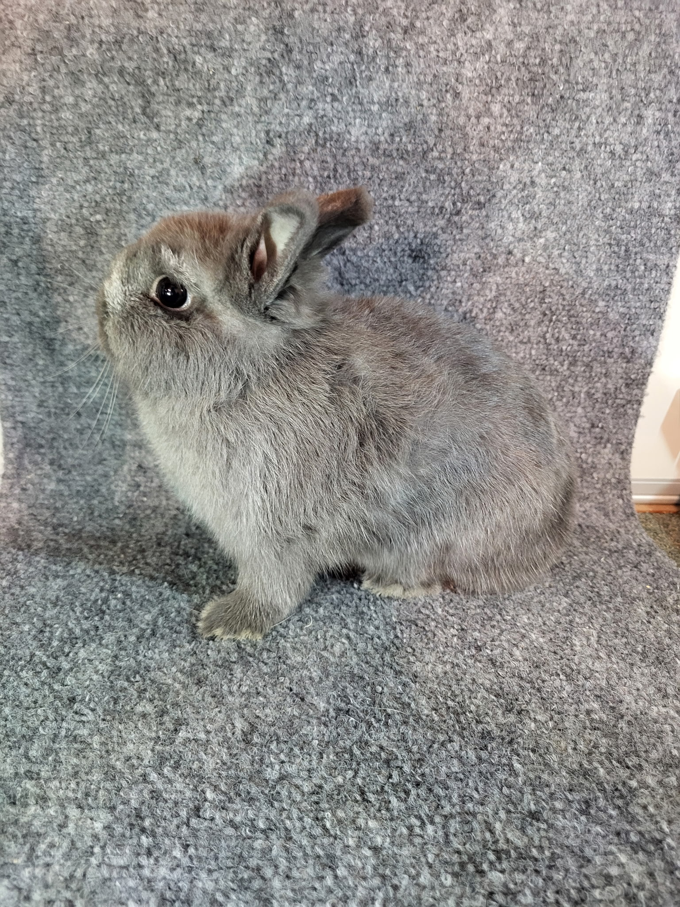
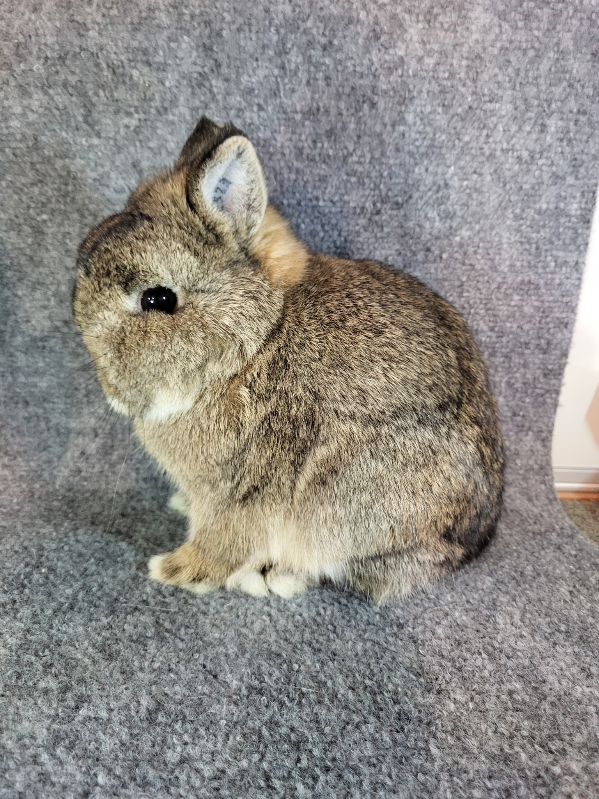
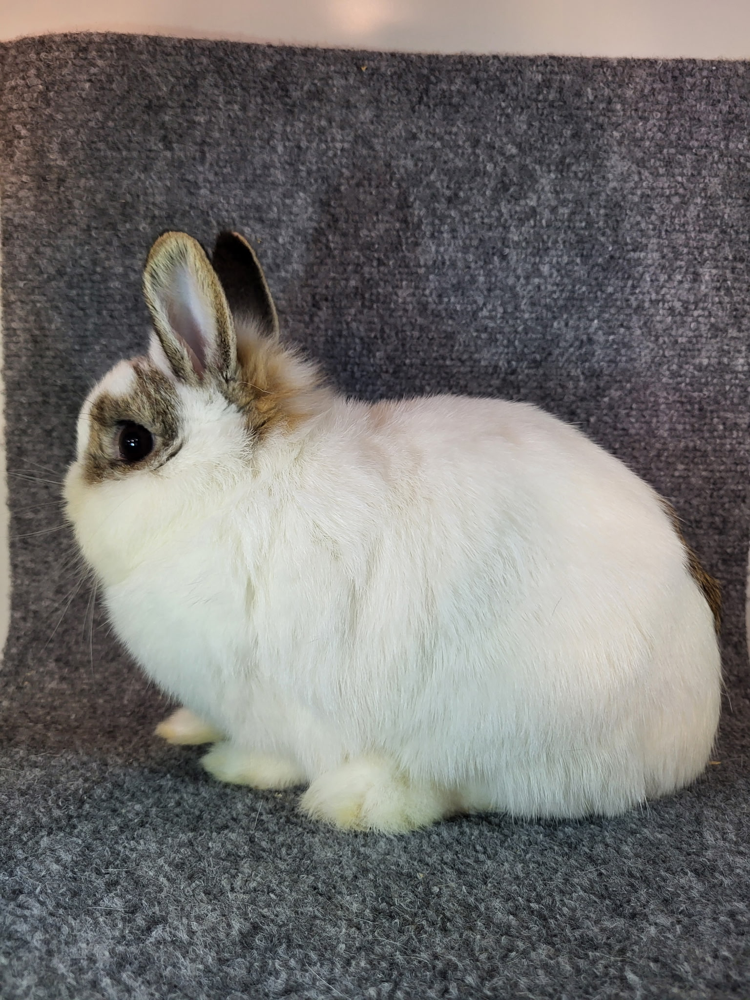
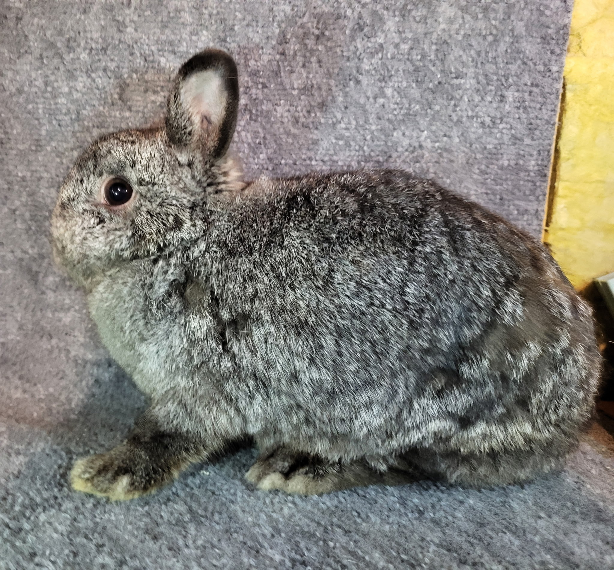

Our Rabbits
Charm Farms F222- "Gambit"

Gambit is a show-quality Netherland Dwarf with a beautiful broken black coat. He is our flagship breeding male for use with solid color females.
- Show Placings
- Best Opposite of Sex, on March 28, 2026 @ South Texas State Fair Rabbit Show
- Placed: 2/8, on May 2, 2026 @ Halters and Hope Chicken and Rabbit Jackpot Show
Jublie Lee- "Bun Bun"

Jublie is a breeding-quality Netherland Dwarf with a lovely broken blue otter coat. She is currently bred to Joey Chestnut and due June 7, 2026
Her first litter she had one broke black buck, one broken black charlie doe, one blue otter doe, one frosted grey doe.
- Show Placings
- Placed 2/4, on 03/28/2026 @ South Texas State Fair Rabbit Show
Junior

Junior is from the first litter of our breeding program. He is a show-quality Netherland Dwarf with a charming broken black coat.
Dam- Jublie Lee
Sire- Charm Farms F222- "Gambit"
- Show Placings
- Best of Class, on 03/28/2026 @ South Texas State Fair Rabbit Show
- Best of Class, on 5/2/2026 @ Halters and Hope Chicken and Rabbit Jackpot Show
Storm- For Sale

Storm is a doe from the first litter of our breeding program. She is a pet-quality Netherland Dwarf with a lovely frosted grey coat. She is available for sale to a new home.
Dam- Jublie Lee
Sire- Charm Farms F222- "Gambit"
- Show Placings
- DQ's for frosting, on 03/28/2026 @ South Texas State Fair Rabbit Show
Charm Farms Samwell- "Joey Chestnut"

DOB- 12/22/2024
Joey Chestnut is a show-quality Netherland Dwarf with a large body and chestnut coat. Joey is a new addition to our breeding program that will be breed to our broken color females.
- Show placings
- Placed:1/2, on 06/13/2025 @ WGCOC
- Placed: 1/2, on 06/13/2025 @WGCOB
- Placed: 1/2, on 06/13/2025 @WGCOA
- Placed:1/2, on 06/13/2025 @ SSS
- Best of Group, on 09/20/2025 @ H-PWSB
- Placed: 3/3, on 09/20/2025 @ H-PWSA
- Best of Variety, on 9/21/2025 @ H-PWSD
- Best of Variety, on 9/21/2025 @ H-PWSC
- Placed: 1/2, on 10/18/2025 @ RRBAFSC
- Best of Variety, on 10/18/2025 @ RRBAFSB
- Placed: 1/2, on 10/18/2025 @ RRBAFSA
- Placed: 13/26, on 04/11/2026 @ 2026 ANDRCN
- Placed: 1/8, on May 2, 2026 @ Halters and Hope Chicken and Rabbit Jackpot Show
- Best of Breed, on May 2, 2026 @ Halters and Hope Chicken and Rabbit Jackpot Show
Charm Farm's Lady Steel- "Lady"

DOB- 9/21/2024
Lady is a breeding-quality Netherland Dwarf with a lovely broken steel coat. We are looking forward to her contributions to our breeding program.
Charm Farm's F247- "Juniper"

Juniper is a breeding-quality Netherland Dwarf with a beautiful broken chestnut coat. She is a new addition to our breeding program.
Ethan's Gorda Junior- "Gloria"

Gloria is a breeding-quality Netherland Dwarf with a lovely black tipped steel coat. She is currently bred to "Man of Steel" and due May 22, 2026